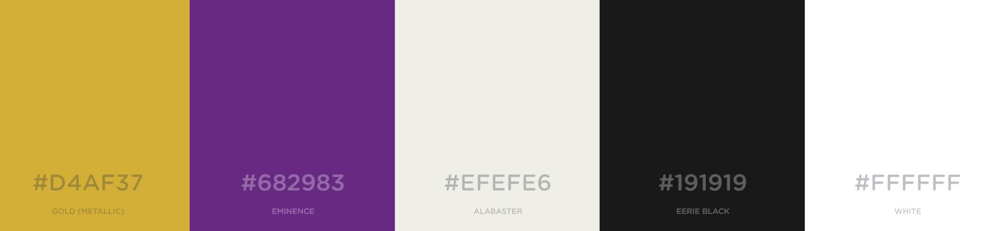
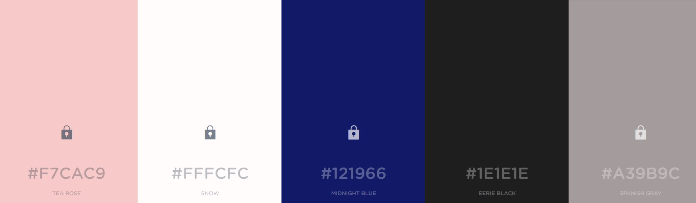
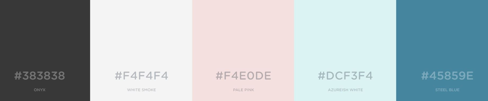

Let's start with the compass on the homepage.
'Compass' has kind of become my tag for everything. For stuff I do in school, like kahoot and quizlet, and stuff I do outside of school, like as my tag in discord. One could say it has almost become an alternate persona for me, and if I can't use the English word compass, I will either go to one of the non-generic English ways of saying compass, like 'northseeker', or use the word compass in a foreign language, like how 'boussole' means compass in French, or Circuitus is compass in Latin.
So, when I use the compass on the homepage, it means that this website represents me. That I have made it mine and that I have personalised it. That this website is my, original, work.
But what about colour choice?
This too was very intentional.
I had four different colour schemes that I created using coolors.co, but I eventually went for the one that you see here.
The first colour scheme that we will look at is the one that has been selected for the website.
The gold colour is what is used for the heading divs. The purple is the background colour and contrasts well against the gold. The alabaster, or creamy white, is what is used for the boxes that contain all of the information (as you see here). The Black is used for the text that you are currently reading, and the white is used for titles, and text outside of the boxes and on the background.
Originally, I had gone for a lighter purple in the background. This, however did not work to its potential with the gold, as both were highlighting colours, and so it needed to change.
This here was my second colour
scheme.
This here was my fourth colour
scheme.
